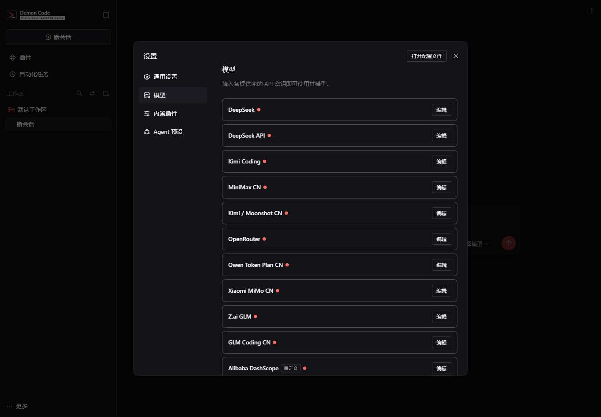
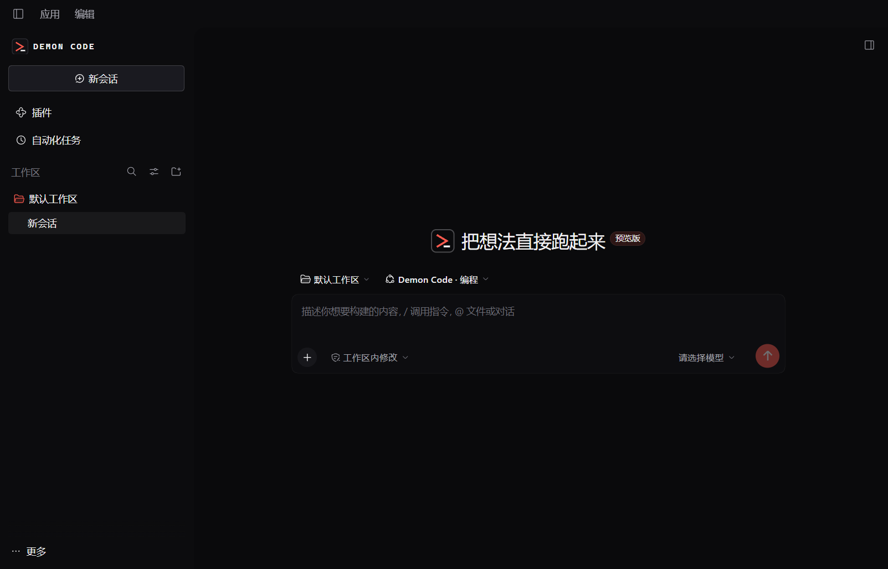
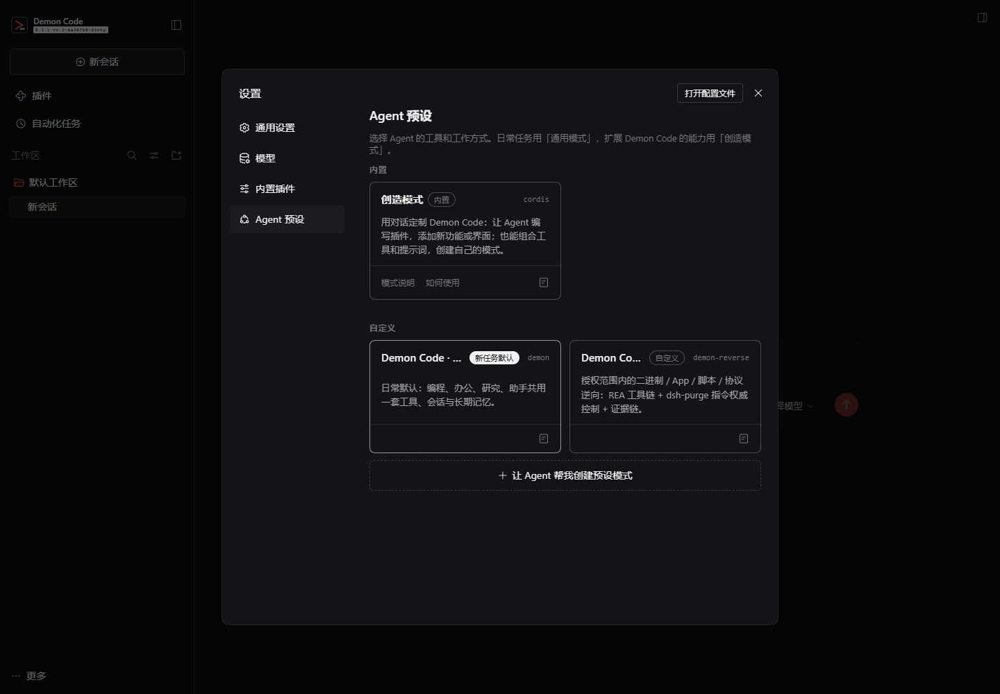
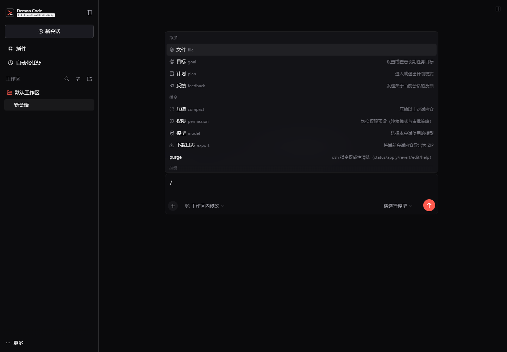

00DEFAULT
通用
Daily driver
编程、办公、研究、助手合并。办公技能默认挂载，编程仍走最严格的读 → 改 → 验证闭环。
- 读写改文件、搜索、终端
- docx / xlsx / pptx / pdf
- 网页检索与 Moli 浏览器
- 项目指令 + 长期记忆
DESKTOP AGENT · WINDOWS X64 · MIT
一个 Codex 风味的桌面工作台。编程、办公、研究、逆向共用同一套工具、会话与长期记忆。 内置 Moli 无头浏览器，默认接国产模型。
Windows 10/11 · 安装包 / 便携 zip · 无需管理员权限
# one agent, three modes $ dc "修复登录测试" read src/auth/session.ts plan 3 files · 1 test edit src/auth/session.ts run pnpm test auth ✓ 12 passed · 0 failed # need a real browser? $ dc "抓取这个 JS 渲染的页面" moli_fetch selector=".video-card" ✓ 47 matches · 1,779 chars
01 / MODES
不再在十个模式里做选择。日常一个“通用”，需要时切“逆向”，做插件用“创造”。
Daily driver
编程、办公、研究、助手合并。办公技能默认挂载，编程仍走最严格的读 → 改 → 验证闭环。
Authorized reversing
面向你拥有或明确授权的目标：REA MCP、dsh-purge 指令权威控制、证据链报告。
Build your own
用对话写 Cordis 插件、组合工具与提示词，做出属于你的 Agent 预设。
AGENT HUB / EXPERTS · SKILLS · MCP
内置 294 位专家，覆盖技术、设计、产品、游戏、数据、营销、安全等 20 个分类。 选中即注入 persona；Skills 可从本地或 Git 安装；MCP 服务器在应用内直接挂载。
把模糊需求收敛成可执行方案，先定位再动手，改完就跑构建。
只处理自有或授权目标；结论落到地址、偏移、字节与可复现命令。
布局先定层级，再谈颜色；覆盖八态、键盘路径与窄屏溢出。
先问决策对象与口径，再看趋势；相关性不冒充因果。
保留样式、公式与批注；批量前先跑小样本，输出到新文件。
关键结论带出处与日期；主动找反例，不编造链接和数据。
select expert → persona → next turn
选中专家后，下一轮直接带上它的方法、边界与输出规范
294 位内置专家 + WorkBuddy 本地专家包导入。分类、搜索、标签、快捷提示词都在一个面板里。
本地目录或 Git 仓库安装；全局 / 当前项目启用；“仅手动”技能不进入模型自动发现。
stdio 或 streamable-http，保存即由 Loader 挂载；工具以 mcp__server__tool 出现在模型工具列表。
THEMES / AMBIENT MOTION
黑曜、余烬、极光、石墨、夜樱。每个皮肤有自己的底色、边框、文本层级与低亮度环境光。
动态背景只用一层固定渐变和 transform 动画，没有 Canvas、没有动画库常驻。
prefers-reduced-motionWORKBENCH / MODEL PICKER
输入框上方常驻 Git 更改、分支、进程、Todo 与终端状态；模型选择器直接给模型列表、视觉标签和绿色→蓝色思考强度滑杆。
$ pnpm test ✓ 12 passed · 0 failed $ git status modified: src/auth/session.ts
02 / BROWSER
Demon Code 内置 Moli（约 2 万星的 Rust 无头浏览器）的桥接插件。 页面由 JavaScript 渲染、需要登录态、只想读一个列表、要截图或 PDF 时，直接调用。
moli_fetch渲染 · Markdown · selector · 截图 · PDFmoli_probe检查引擎 · 版本 · 按需安装
静态文章和 API 仍优先 web_fetch，更轻。Moli 引擎单独安装或自动发现，
不把 100 MB 浏览器塞进每个安装包。
03 / MODELS
DeepSeek 官方 + pi-ai 多供应商。路由实时增删，密钥按请求解析，不写进配置文件。

04 / PLUGINS
不是把所有能力硬编码进 Agent。能力通过插件挂载，失败可隔离，更新不重写循环。
NATIVE
npm / GitHub 安装，设置页启停。工具、提示词、会话、计划模式都是插件。
dsh plugin add <package>
BRIDGE
导入 pi 的 skills / prompts / themes。可执行扩展不伪造运行时，边界如实告知。
pnpm demon:pi-bridge
PROTOCOL
标准 MCP 客户端。REA 逆向模式就是一个 MCP 服务器；第三方工具按同一协议接入。
mcp__<server>__<tool>
05 / MEMORY
两层 Markdown 记忆：用户级跨项目偏好，项目级构建命令、架构约束与踩坑。 每条一行，带日期、分类、来源。能 grep、能提交 Git、能回滚。
# cross-project, durable facts only # YYYY-MM-DD | category | fact | source 2026-10-22 | build | pnpm build runs 9 gates | repo 2026-10-22 | arch | presets are bundle patches | docs 2026-10-22 | pref | answer in Chinese, code in English | user 2026-10-22 | gotcha| Moli needs engine on PATH | moli_probe
06 / SCREENS
近黑底、等宽微标签、方形控件，一个朱红强调色。信息密度高，但不吵。



07 / UPDATE
启动后自动读取 GitHub Releases 的版本号。发现新版本时下载对应平台资产，
用 SHA256SUMS.txt 校验，退出后静默安装并重启。
.old 备份0.2.1-rc.2build 20261022.40.2.1-rc.3releasesha256 ok✓silent / restart✓08 / INSTALL
Windows 10/11，安装包或便携包，不需要管理员权限。数据默认在 %USERPROFILE%\.dsh。
274 MB · 双击运行。未签名，SmartScreen 提示时选“更多信息 → 仍要运行”。
demon-code-0.2.1-rc.2.20261022.4-win-x64-unsigned.exe
360 MB · 解压到任意目录，运行 Demon Code.exe。不写安装记录。
Demon-Code-0.2.1-rc.2.20261022.4-win-x64-portable.zip
Node.js 22.19+ 或 24+，pnpm 11。构建后启动桌面端或 Web。
$ pnpm install $ pnpm run build $ pnpm run dev:desktop
安装包与 SHA-256 已发布在 GitHub Releases；源码构建命令见“从源码运行”。
09 / FAQ
它不是一个 IDE，也不是纯 CLI。它是桌面端的一体化 Agent：通用模式把编程、办公、研究、助手放在一起；逆向模式接 REA；插件同时吃 Cordis、pi 资源和 MCP。模型可换，数据本地，源码完整。
不。预置 15 条路由，DeepSeek 只是默认。Kimi、Qwen、GLM、MiniMax、豆包、混元、SiliconFlow、OpenRouter、本地 Ollama 都能接。
安装包包含桥接插件，不包含约 100 MB 的 Moli 引擎。插件会在 PATH 或 %LOCALAPPDATA%\Moli 自动发现；缺失时运行 moli_probe action=install，或使用 Moli 官方安装脚本。
不会。dsh-purge 以 autoApplyOnStart: false 挂载。只有你明确执行 /purge apply 或调用 purge_apply 并确认后，才会改写运行时并调整权限默认值。
记忆是本地 Markdown 文件。模型请求会按你选择的供应商发送必要上下文；密钥在受管凭据存储中，不写入记忆、项目或日志。